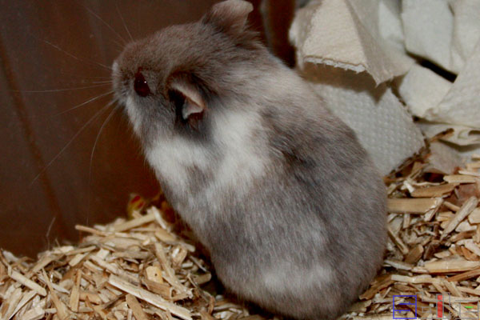
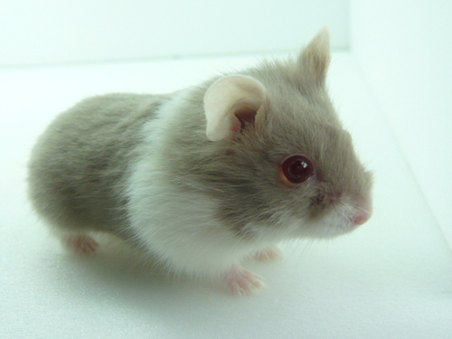
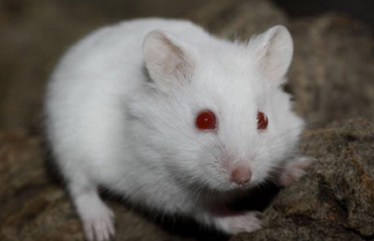
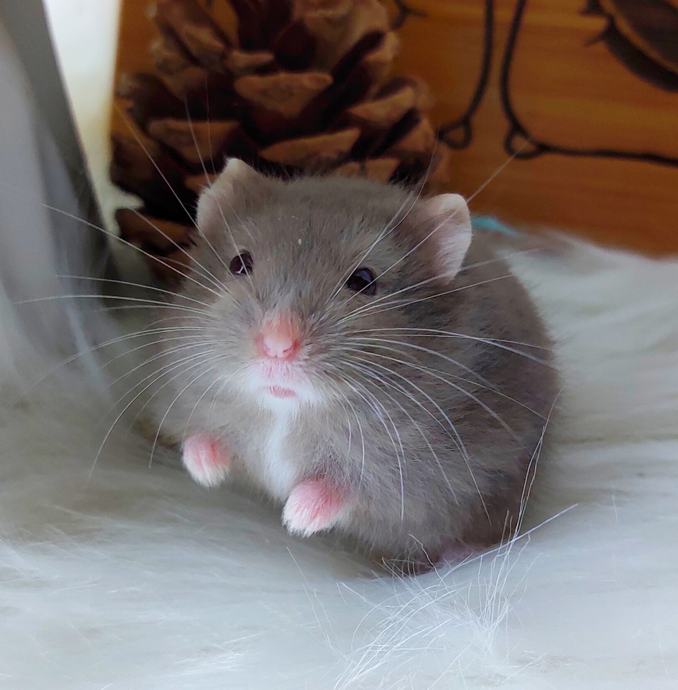

坎貝爾侏儒倉鼠 (Campbell's Dwarf Hamster)
俗稱：一線鼠、雪球、紫羅蘭、白熊、黑熊、琥珀、花斑
身長：約7.5~11cm
體重：約30~40g
壽命：約1.5~3年
主要分布於為東亞及中亞草原。
一線鼠跟三線鼠外型相近，但體型稍微大一些，耳朵較大較尖。也是因為毛色差別而有很多別名。有較多個體的眼睛為紅色。
個性：較兇、比起三線鼠較不親人。
習性：受到驚嚇時通常不會飛奔逃跑，而是做出反擊行為(ex:啃咬)，因此普遍認為飼養有難度。
